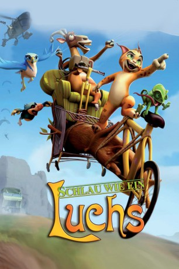

#10399 Schlau wie ein Luchs
Alternativ: The Missing Lynx (Englischer Titel)
 
 IMDB-Wertung: 5.6 / 10
IMDB-Wertung: 5.6 / 10  Metascore: 0
Metascore: 0 
Der exzentrische alte Millionär „Noah“ beschließt eine zweite Arche zu bauen, auf der er von allen gefährdeten Tieren der Erde jeweils zwei überleben sollen. Zur Unterstützung bei diesem Tier-Rettungs-Versuch engagiert er unpassender Weise den kaltblütigen Jäger „Newman“. Aber selbst der erfahrenste Jäger bekommt Probleme mit der Bande von Tieren, mit der er in diesem Abenteuer konfrontiert wird! Die rebellische Gruppe besteht aus dem schlauen Luchs namens „Felix“, dem urkomischen, paranoiden Chamäleon „Gus“, der sportbegeisterten Ziege „Betty“, dem rachsüchtigen Adler „Astraté“ und dem blinden Maulwurf „Ruppert“. Kann es eine bessere Kombination geben? Eine wilde Jagd beginnt und hält so manchen aufregenden und lustigen Zwischenfall bereit!
Jahr: 2008
Dauer: 101 Minuten
FSK:
Land: Spanien Studio: DTP EntertainmentTonspuren: DTS - ,
Untertitel:
Auflösung: 1080p (1920x1036) Größe: 5785 MB
Genre: Action, Komödie, Abenteuer, Animation/Trick, Familie
Regisseur: Raul Garcia, Manuel Sicilia
Drehbuch: Manuel Sicilia, Raul Garcia, Jose E. Machuca, Valentín Fernández-Tubau, Pedro Angosto
Soundtrack: Sergio de la Puente
Darsteller:
- Julio Núñez als Noé (credit only)
- César Sarachu als Diógenes
- Craig Stevenson als Rupert / Noah / Fat Soldier / Nurse 2 / Additional Voices
- David Robles als Félix
- Cecilia Santiago als Beeea
- Conchi López als Astarté
- Abraham Aguilar als Gus
- Roberto Cuenca als Noé
- Stephen Hughes als Newmann / Gus / Nurse 1 / Additional Voices
- Carlos del Pino als Rupert
- Pepa Castro als Doctora
- Beatriz Berciano als Lincesa
- Javier García Sáenz als Soldado Pequeño
- David García als Soldado Gordo
- Esperanza Pedreño als Patty
- Javier Gauna als Guarda Doñana / Topo X
- Álvaro Reina als Guarda Tele / Topo Z / Soldado
- Javier Moreno als Guarda Camilla / Líder Pájaros
- Héctor Garay als Megáfono / Topo Y
- Raquel Gribler als Sra. Rupert / Garza 5
- David Beteta als Topo 11 / Soldado
- Pilar Coronado als Garza 3
- Lorenzo Beteta als Lobo Jefe / Murciélago Patudo
- Fernando Hernández als Lobo Viejo
- Álvaro Rodríguez als Soldado
- Juan C. Lozano als Soldado
- Manuel Bellido als Soldado
- Álvaro Navarro als Soldado
- David Báscones als Soldado
- Roberto González als Soldado
- José Luis Martinez als Felix / Skinny Soldier
- Kate Petrie als Be-e-etty / Doctor / Additional Voices
- Thisbe Burns als Astarté
- Lúa Ríos als Lynxette / Additional Voices
- Cristina Glez. Reparaz als Garza 1
Datei: X:\Kinder Filme (N-Z)\Schlau wie ein Luchs (2008, FSK, 1920x1036).mkv seit 04.01.2019
Festplatte: Kinder-Filme+Trick
 Es gibt insgesamt 87 Filme in der Gruppe 'Kinder Filme (N-Z)'
Es gibt insgesamt 87 Filme in der Gruppe 'Kinder Filme (N-Z)'